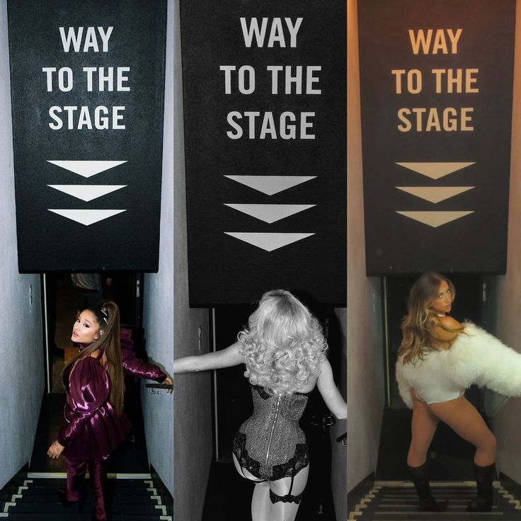

Mijn favoriete popartiesten
Welkom in mijn Digital Garden! ✨
Dit is mijn eigen POP GIRLS wereld, vol met mijn favoriete vrouwelijke popartiesten. Van Ariana Grande en Sabrina Carpenter tot Olivia Rodrigo, Roxy Dekker en Tate McRae.
Ontdek hun muziek, stijl, foto's en leuke weetjes. Iedere artiest heeft een eigen uitstraling. Samen vormen ze mijn favoriete popwereld.
Ontdek mijn favorieten →
Over mijn project
Ik heb gekozen voor vrouwelijke popartiesten omdat ik erg van popmuziek houd. Ik vind het leuk om te kijken naar hun muziek, kleding, stijl en uitstraling. Ook vind ik het interessant hoe iedere artiest zich op een andere manier presenteert.
Daarom heb ik gekozen voor Ariana Grande, Sabrina Carpenter, Olivia Rodrigo, Roxy Dekker en Tate McRae. Ik vind hun muziek leuk en ze hebben allemaal hun eigen stijl.
Met mijn Digital Garden wil ik meer over deze artiesten laten zien en verschillende foto's en links verzamelen. Mijn website is een digitale verzameling die ik steeds verder kan uitbreiden.
Mijn drie sfeerwoorden zijn:
- Glamoureus
- Creatief
- Energiek